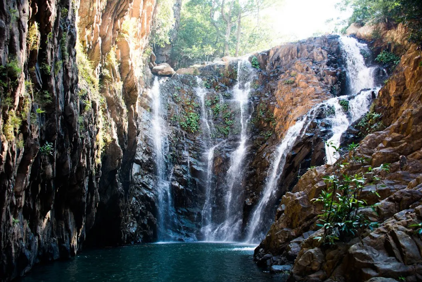

Gudguda doesn’t have signboards. It has sensations.
The wind gets cooler as you ride past Kuchinda. The smell of eucalyptus sharpens. You hear less honking, more cicadas. The trees thicken. The roads twist. And suddenly—there it is. The last turn where Google Maps gives up… and the trail begins.
I left Sambalpur around 6:30 AM with a flask of chai, towel, dry clothes, and zero expectations. 45 km of pure winding bliss. The road narrows after Jharsuguda side. My FunZone rental handled it like a champ—smooth on tarmac, confident on dust.
“Some roads lead you to your younger self. This was one of them.”
I parked near a cluster of bikes. No entry fee. Just a small tea shack, and a hand-painted wooden arrow: “To Gudguda →”.
The hike is about 15 minutes. Not hard, but slippery. You cross small streams, jump rocks, duck under tree limbs. The louder the sound of water gets, the faster your heart beats. And then—
A Splash of Pure Joy
Gudguda isn’t one fall—it’s a cascade of three. Each has its own pool. Locals were already swimming, splashing, laughing. The water is cold. Shockingly cold. But you jump anyway. And when you do—you feel free.
I floated on my back, staring at the trees above, listening to the waterfall behind me. For those few minutes, there were no problems. No news. No deadlines. Just droplets on skin and rocks under feet.
Travel Log
- Ride Distance: ~45 km one way
- Best Time: October to March (post-monsoon, less slippery)
- What to Bring: Towel, shoes with grip, drinking water, and light snacks
- What NOT to Bring: Speakers, plastic. Respect the silence & nature.